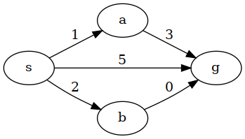
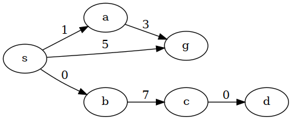

Search
AI - 2021 H2
Created: 2021-09-01 Wed 08:41
Search Problem
Path-finding
Many interesting problems can be framed as Search problem in a Graph.
- Nodes can represent specific states of a system/world/game.
- Edges represent actions that transform the state from one node into another.
- Example states:
- Maze: Coordinates of the player.
- Chess: Board position, castling state and who's to play.
- Racing game: Points in \((t, \vec{x}, \vec{v}, \theta, \varphi, Gear, Pedals, Wheel)\).
- Poker: Cards and chips that each player has.
Sokoban
Taxonomy
- Mode
- Cooperative
- Adversarial
- Knowledge
- Total
- Partial
- Determinism
- Deterministic environment
- Non-Deterministic environment
- Ply (turn) time horizon
- Real-time
- Unbounded
Examples
| Game | Mode | Knowledge | Determinism | Time horizon |
|---|---|---|---|---|
| Maze | Cooperative | Total | Deterministic | Unbounded |
| Sokoban | Cooperative | Total | Deterministic | Unbounded |
| Time-trial Racing | Cooperative | Total | Deterministic | Real-time |
| Freecell | Cooperative | Partial | Non-Deterministic | Unbounded |
| Game | Mode | Knowledge | Determinism | Time horizon |
|---|---|---|---|---|
| Racing | Adversarial | Total | Deterministic | Real-time |
| Chess | Adversarial | Total | Deterministic | Real-time |
| Among Us | Adversarial | Partial | Deterministic* | Real-time |
| CS:GO | Adversarial | Partial | Deterministic* | Real-time |
| Liar's Dice | Adversarial | Partial | Non-Deterministic | Real-time |
| Uno | Adversarial | Partial | Non-Deterministic | Real-time |
Problem Terminology
We will need some common terms to talk about path-finding.
- State: A specific configuration of a system.
- Chess: The board* and who's to play.
- Action: An specific action that transforms the system's State.
- Chess: A move by the active player.
- Search space: The space where points are system states. Related to the
classthat represents the state.- Chess: A way of representing all chess states, like all FEN positions.
- Search state graph: The graph connecting states through actions.
- Chess: A huge graph where edges are chess moves from one state to another.
Search terminology
- Search problem: \((Space, start, goal)\)
- Chess start: The state representing the starting board position.
- Chess goal: A function that checks for check-mates
- Search Tree: The spanning tree of Nodes representing paths on the State graph. Built throughout the Search by adding Nodes or updating edges.
- Expansion: To compute the possible actions that may be performed and their resulting states.
A generic search algorithm
def generic_search_sketch(g: Graph, starting_node, goal_function) -> Solution:
Closed = set() # Closed: Explored nodes (We only store the state)
Open = MagicalCollection() # Open: Known, but still unexplored Nodes
Open.add(starting_node)
while Open:
node = Open.pop() # Takes a node from Open. Which one?
if is_goal(node):
return path(node)
Closed.add(node)
for n in node.neighbors(): # Creates Nodes around node.state
if n.state in Closed:
continue
Open.upsert(n) # Insert|Update to keep Nodes a Spanning Tree (if needed)
return None
Search Algorithms
Depth-first Search
A simple implementation
def _dfs(g: Graph, state: State, q: Query, p: Path) -> Path:
"""Naive-DFS. Might get stuck in a loop."""
if q.isGoal(state):
return p
for s in g.neighbors(state):
path = _dfs(g, s, q, p+s)
if path:
return path
return None
def dfs(g: Graph, s: State, q: Query):
return _dfs(g, s, q, Path())
DFS v2 - Loop-safe
def _loop_free_dfs(g: Graph, state: State, q: Query, p: Path, visited: Set[State]) -> Path:
"""Simple-DFS. Checks for loops, but it might run into a Stack Overflow."""
if q.isGoal(state):
return g.path_to(state) # Retrieve the path to state
if state in visited
return None
visited.add(state)
for a, s in g.neighbors(state):
path = _loop_free_dfs(g, s, q, p+a)
if path:
return path
return None
def loop_free_dfs(g: Graph, s: State, q: Query) -> Path:
return _loop_free_dfs(g, s, q, Path(), set())
DFS v3 - Bounded stack
def loop_free_recursion_free_dfs(g: Graph, start: State, q: Query, p: Path) -> Path:
"""DFS with loop detection and no recursion. Now a Generic Search using a Stack."""
Closed = set()
Open = Stack()
Open.push(start)
g.reach(start, action=None, parent=None)
while not Open.empty():
state = Open.pop()
if q.isGoal(state):
return g.path_to(state) # Retrieve the path to state
for a, s in s.neighbors():
if s in Closed:
continue
g.reach(s, action=a, parent=state) # Update the path to s (if needed)
Open.push(s)
return None
Breadth-first Search
A simple implementation
def breadth_first_search(g: Graph, start: State, query: Query) -> Path:
"""BFS. A Generic Search using a Queue."""
Closed = set()
Open = Queue()
Open.push(start)
g.reach(start, action=None, parent=None)
while not Open.empty():
state = Open.pop()
if q.isGoal(state):
return g.path_to(state) # Retrieve the path to state
for s in state.neighbors():
if s in Closed or s in Open:
continue
g.reach(s, action=a, parent=state) # Record the path to s (if needed)
Open.push(s)
return None
Dijkstra's Algorithm
Graphs with costs
- Many problems have actions that have different costs.
- Time or effort actions take varies naturally
- Some roads are longer, climbing stairs takes more time and energy.
- Time or effort actions take varies naturally
- BFS won't be optimal in cost by being optimal in the number of actions.
Solving problems with cost
The natural starting point is BFS as it's optimal in the number of actions.
- How do we translate BFS's hop-consiousness into cost-consiousness?
- Instead of the closest node you can reach, take the cheapest one.
- Wait, is that enough? What's so smart about this? How is Dijkstra
famous for it?
- Yes; nothing; Invented it while drinking coffee, and also invented many more algorithms.
Updating Open
Costs will force us to continuously rank and update nodes in \(Open\).

We will need something more efficient than a list or a stack.
- A Priority Queue (aka Heap) does exactly what we need. (Python's heapq)
Updating Open
What should we do here?

- Expansions: \((0, s), (0, b), (1, a), (4, g)\).
- Insertions/Updates: \([(0, s)], [(1, a), (0, b), (5, g)], [(7, c)], [(5\rightarrow 4, g)]\).
- Final Closed: \({s, b, a}\). Final Open: \((7, c)\). Unknown States: \(d\)
A simple implementation
def best_first_search(g: Graph, start: State, query: Query) -> Path:
"""Dijkstra's algorithm. Similar to BFS, but prefering lower costs."""
Closed = set()
Open = CustomPriorityQueue() # A Heap with fast updates for existing items
Open.push(Node(start))
while not Open.empty():
node = Open.pop()
if q.isGoal(node.state):
return node.get_path()
for a, s in state.neighbors():
if s in Closed:
continue
n = Node(s, action=a, parent=state)
Open.update_if_better(n) # Open may already have a Node for s
return None
Smarter decisions
Lack of comprehension
- Even while Dijkstra's Algorithm is aware of the costs, it still takes
decisions that humans looking at a (simple) graph wouldn't.
- We make good guesses on where to head to, even if we don't exactly know the solution for the problem.
- What do we really think about when solving search problems?
- We sense that some States are better than others as they seem to be closer to the goals.
- We estimate the remaining cost.
What if we could estimate?
- Say we had a function \(estimate: State \rightarrow \mathbb{R}_0^+\)
- We could tie-break based on the estimated cost.
- For equally expensive nodes from Open, we would prefer the one that seems closer
- Can we do better?
Rethinking costs
With a known cost to a Node, and an estimated remaining cost to reach a goal, we can guess what's the cost of a solution that goes the Node.
- Instead of only ranking with \(cost: Node \rightarrow \mathbb{R}_0^+\) we
can also consider the estimated remaining cost.
- \(solution\_cost: Node \rightarrow \mathbb{R}_0^+\)
- \(solution\_cost(n) = cost(n) + estimate(n.state)\)
- Actually known as \(f(n) = g(n) + h(n.state)\)
Heuristics
- How do we estimate costs of a path we don't know yet?
- What if we estimate costs poorly?
- What's a poor estimation?
- \(h(s) = 0\) is a function from \(State \rightarrow \mathbb{R}_0^+\).
- With this we are back to using Dijkstra's algorithm?
- What if we under-estimate the cost?
- What if we over-estimate the cost?
- Can we improve our estimations as we go?
- \(h(s) = 0\) is a function from \(State \rightarrow \mathbb{R}_0^+\).
- What's a poor estimation?
A*
\(A^*\) is the search algorithm that ranks nodes with \(f(n)=g(n)+h(n.state)\).
- Is it better? Is it the best?
- Well, it depends on how good the heuristic is.
What's a good heuristic?
- \(h(s)=0\) is definitely not good.
- Not the worst, at least you fallback to Dijkstra's Algorithm, which works and gets optimal solutions.
- Really? What's worse than \(h(s)=0\)?
- A misguiding heuristic. What if \(h(g)=\infty\) for every goal state?
- That's evil! With that we would miss the goal!
- True. With bad heuristics \(A^*\) may not be complete nor correct.
- A misguiding heuristic. What if \(h(g)=\infty\) for every goal state?
- If \(h(s)\) was the actual cost to the solution it would be really good.
- Indeed, but computing that is solving the search problem at hand.
- This perfect heuristic, called \(h^*(s)\), is a good reference heuristic.
So, what's a good heuristic?
- A good heuristic must not drive us away from a goal.
- \(0 \leq h(s) \leq h^*(s)\)
- \(f(n)\) would always be a lower bound for the cost.
- Otherwise we may defer expanding nodes in the optimal path for too long and find a sub-optimal path first.
- Known as admissibility.
- Is this enough? No
- \(0 \leq h(s) \leq h^*(s)\)
A stronger heuristic property

- This is admissible and almost \(h^*(s)\), the only difference is on \(B\).
- \(A^*\) gets misdirected. What's so wrong with \(h(B)=0\)?
- It tells us that \(B\) is really good and \(B\) gets in \(Closed\) too early.
Consistency
- The trick here is likely be on \(h(B)=0\). \(h=h^*\) on the other states.
- BFS and Dijkstra expand nodes with non-decreasing steps / cost.
- But this glitch in \(h(B)\) makes \(f(S)=4\) drop down to \(f(B)=3\)
- Consistency:
- \(h(n) \leq c(n, a, n') + h(n')\)
- \(g(n) + h(n) \leq g(n) + c(n, a, n') + h(n')\)
- \(f(n) \leq f(n')\)
Optimality
- Is \(A^*\) finally optimal when using a consistent heuristic?
- Yes, and we can get a slightly more general result for free.
- w-\(A^*\) is w-optimal.
- \(f_w(n) = g(s) + w*h(n)\) produces solutions no more than \(w\) times more expensive than the optimal.
- This makes the fringe deform even further towards the goals.
Engineering heuristics
- We can disassemble a problem without affecting the heuristic properties.
- Removing an action/edge keeps a heuristic admissible.
- Removing an action/edge keeps a heuristic consistent.
- Can we devise a problem with more actions and solve it perfectly?
- This problem is called a relaxation.
- Solving it with a consistent heuristic, like \(h^*\) would give us a consistent (and admissible) heuristic for our actual problem.